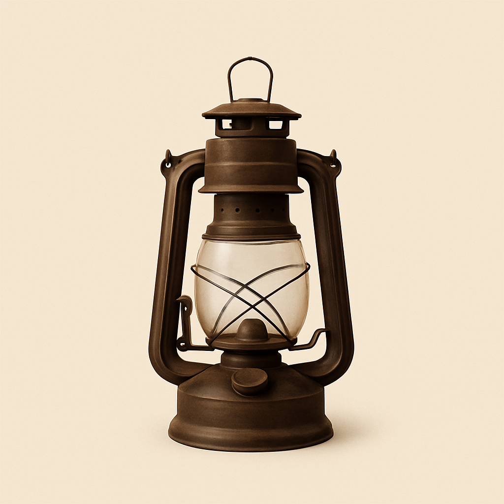
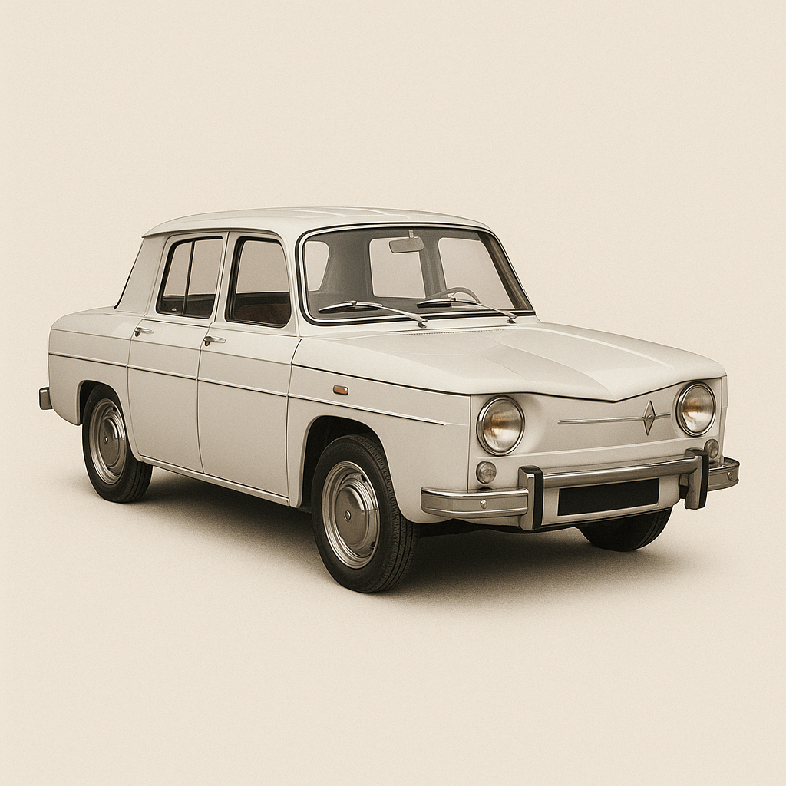
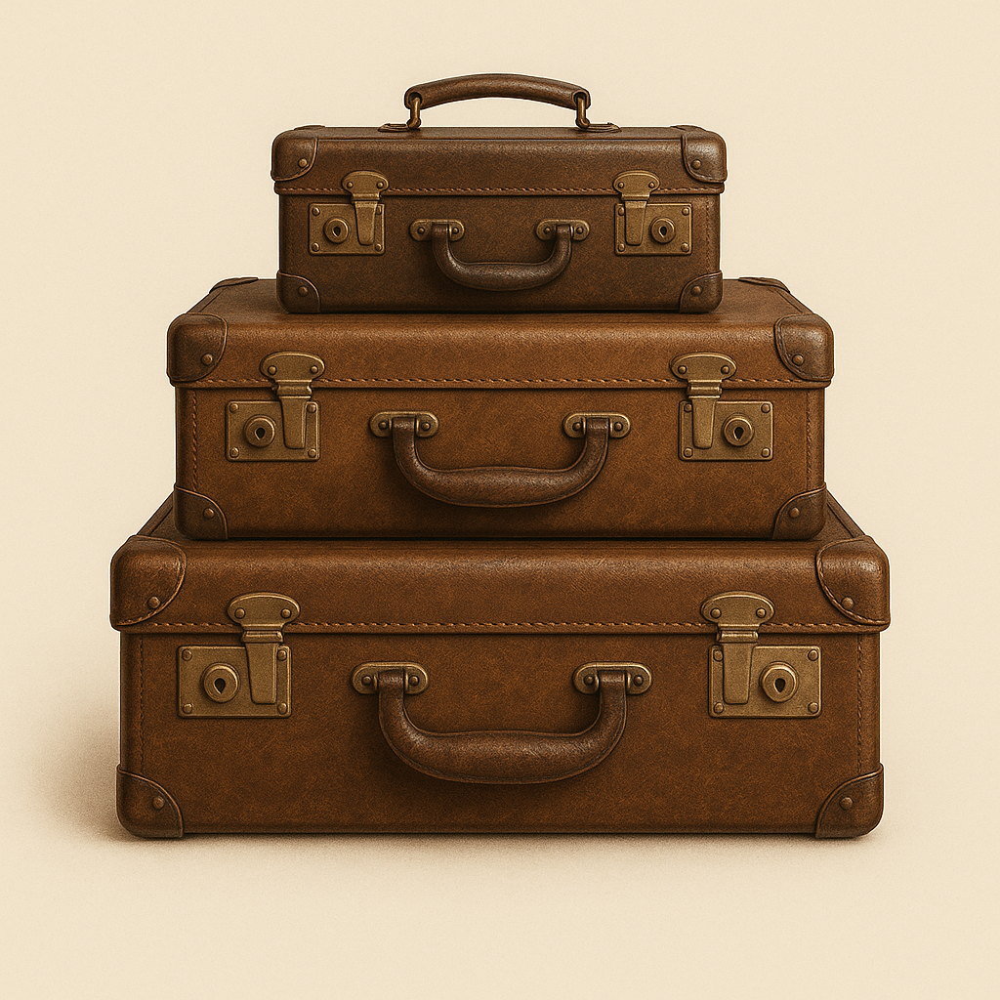
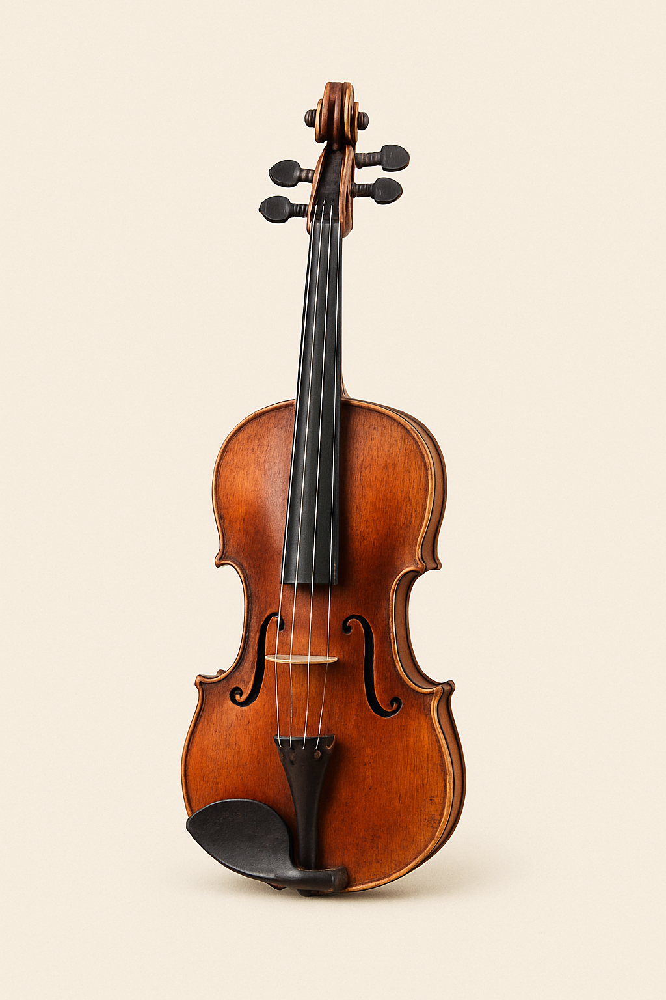
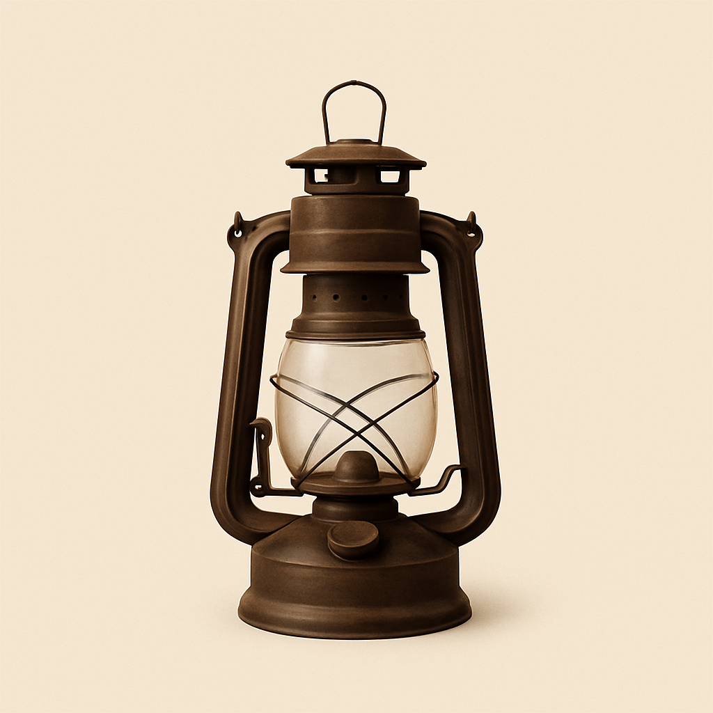
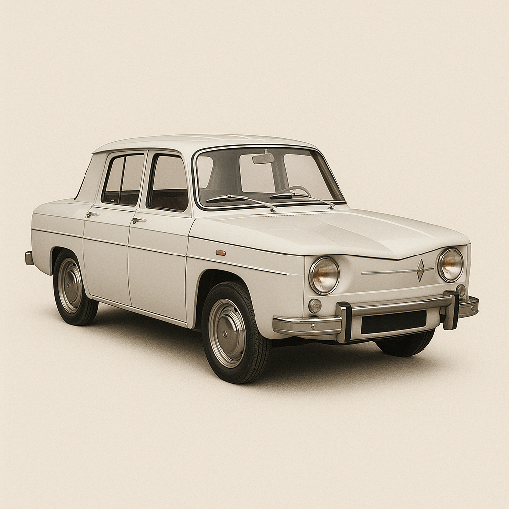
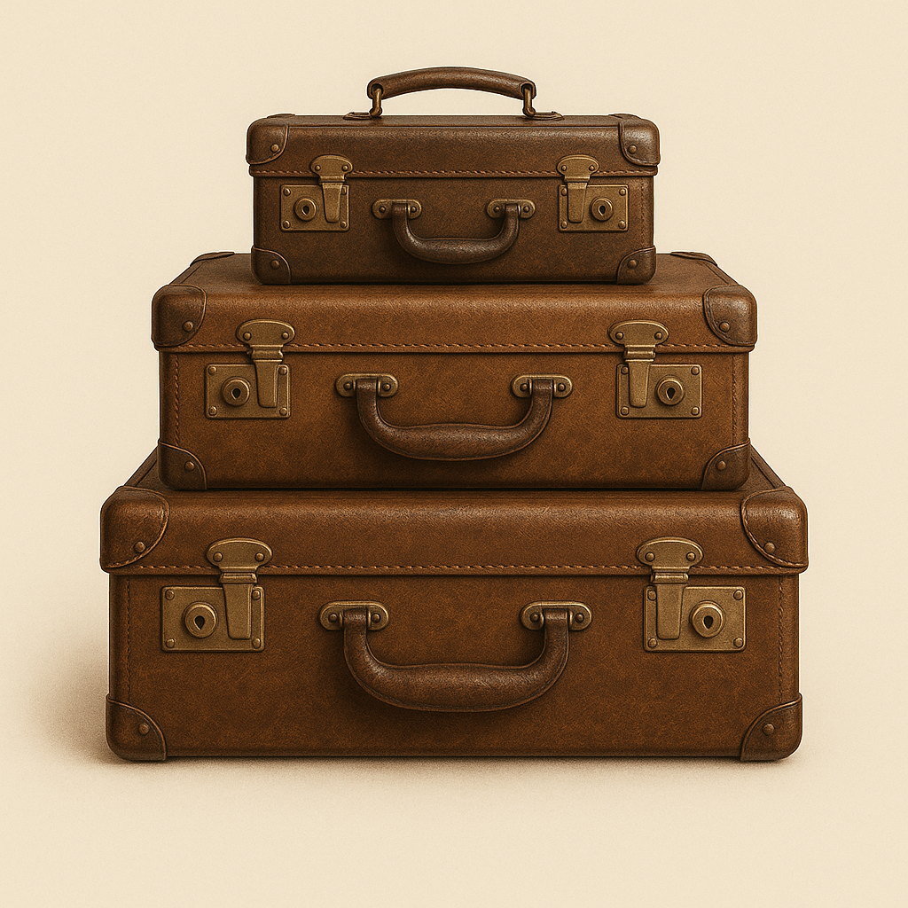
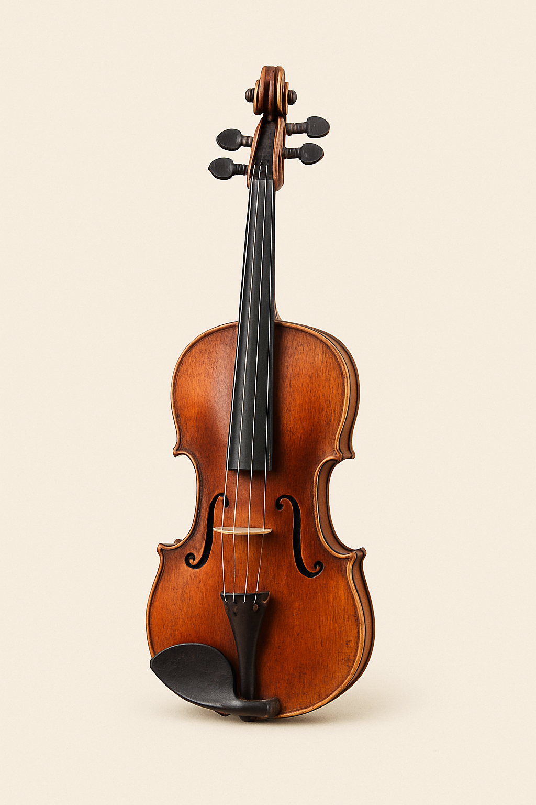

Despre
Old Soul este mai mult decât un simplu magazin online — este o fereastră către trecut, un portal către epoci în care rafinamentul și meșteșugul erau la loc de cinste. Pasiunea noastră pentru obiectele vintage s-a născut din dorința de a readuce la viață frumusețea, povestea și valoarea lucrurilor care, deși nu mai sunt noi, nu și-au pierdut nici farmecul, nici sufletul. Fiecare produs pe care îl oferim are o istorie, o energie aparte și este ales cu grijă pentru a se potrivi cu cele mai sensibile gusturi – fie că este vorba de o cameră foto de epocă, un gramofon perfect funcțional sau o Dacie 1300 restaurată cu atenție.
 






